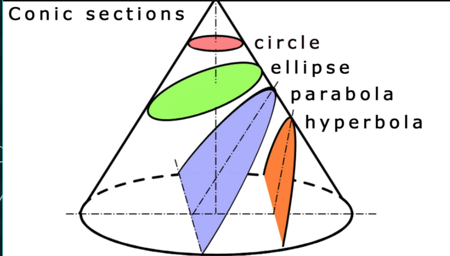
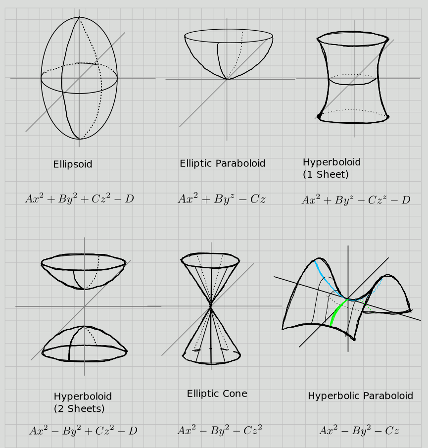
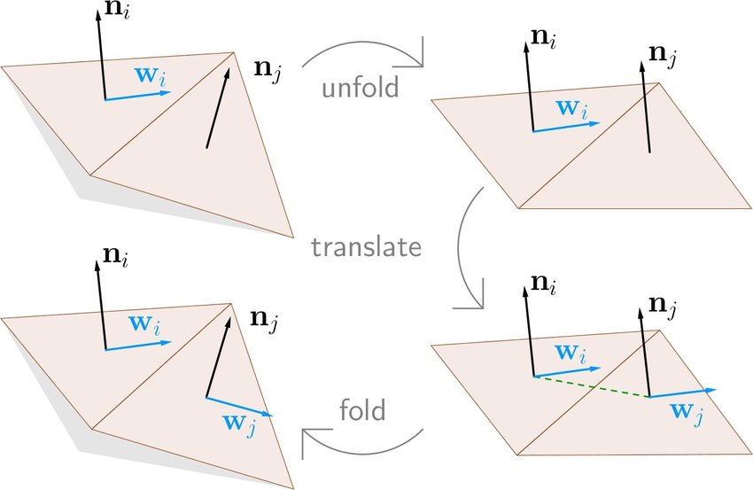

Interesting Topological Spaces in Algebraic Geometry
Intro/Motivation
Space, but Which One?
You run into a “space” in the wild. Which one is it?
How many possible spaces could it be?
How much information is needed to specify our space uniquely?

Possible Applications: Physics


Possible Applications: Data

Possible to fit data to a high-dimensional manifold, makes clustering/grouping easier (here, slice with a hyperplane).
Can extract information about an entire family of objects and how they vary. Also useful for outlier detection!
Where to Start
Where to start the hunt: what structure does it have? What can you “measure”, what does it look like locally? How might it vary in ways you can’t measure?
Important question before attempting to classify:
What does “space” mean? Need to pick a category to work in.
What does “which space” mean? Need an equivalence relation.
Question 2: Which Space?
The Greeks: Conics
Early classification efforts: conic sections.
- Apollonius, 190 BC, Ancient Greeks
Key idea: realize as intersection loci in bigger space (projectivize \(\RR^2\))
Note the 6 coefficient parameters
Each conic is a variety, and we can obtain every conic by "modulating* the 6 parameters.

The Greeks: Conics
We can imagine a moduli space of conics that parameterizes these:
All of \(\RR^6\) is too much information: scaling by a nonzero \(\lambda \in \RR\) yields the same conic, so we can reduce the space [
^6 ^5 .]Important point: \(\RP^5\) is a projective variety and a smooth manifold! Tools available:
- Dimension (what does a generic point look like?)
- Tangent and cotangent spaces, differential forms
- Measures, metrics, volumes, integrals
- Intersection theory (Bezout’s Theorem!), subvarieties, curves
- Linear algebra and Combinatorics (enumerative questions)

Quadrics
 [\[\begin{array}{l} A x^{2}+B y^{2}+C z^{2}+2 F y z+2 G z x+2 H x y+2 P x+2 Q y+2 R z +D=0 \\ \\ \text{Setting} \quad E\definedas \left[\begin{array}{llll} A & H & Q & P \\ H & B & F & Q \\ G & F & C & R \\ P & Q & R & D \end{array}\right] \qquad e\definedas \left[\begin{array}{lll} A & H & G \\ H & B & F \\ G & F & C \end{array}\right] \qquad \Delta \definedas \operatorname{det}(E) \end{array}\]
]
(discriminants), the equation becomes \(\vector x^t E \vector x = 0\) and we have a classification:
What is the moduli space? It sits inside \(\RR^{16}\), possibly \(\RP^{15}\) but not in the literature.
Automorphisms
Problem: infinitely many points in these moduli spaces correspond to the same “class” of conic
How to address: Klein’s Erlangen program, understand the geometry of a space by understanding its structure-preserving automorphisms.
- For affine space \(\AA^n_\KK\): \(\mathrm{Aff}(\AA^n_\KK) = \AA^n_\KK \semidirect_\psi \GL(\AA^n_\KK)\), i.e. “twist” a translation with an non-singular linear transformation.
- For Euclidean space, want isomoetries. \(\RR^n\): can “reduce structure groups” to get \(\RR^n \semidirect_\psi O(n, \RR)\), i.e. a rotation and a translation.
- Can restrict to orientation preserving: \(\RR^n \semidirect_\psi SO(n, \RR)\).
- For topological spaces: a Lie group.
Can then “mod out” by the appropriate morphisms to (hopefully) get finitely many equivalence classes

Classification in Topology
Two main categories with a forgetful functor: \(\mathbf{Diff} \to \mathbf{Top}\).
- What’s in the “image” of this functor?
- Manifolds that admit a differentiable structure.
- What is the “fiber” above a given topological manifold?
- Distinct differentiable structures.
- What’s in the “image” of this functor?
Classifying manifolds: considered open in a few directions, current work in classifying morphisms (mapping class groups, Torelli groups), knot theory, embeddings/immersions/submersions/isometries
General slogan: classified by geometric data in low dimensions (\(\leq 4\)), algebraic data in high dimensions
Topological Category
Classifying manifolds up to homeomorphism: stratify “moduli space” of topological manifolds by dimension.
- Dimensions 0,1,2,3:
- Smooth = Top. See smooth classification.
- Dimension 4:
- Topologically classified by surgery, but barely, and not smoothly.
- Dimension \(n\geq 5\):
- Uniformly “classified” by surgery, s-cobordism, with a caveat:
- \(\pi_1\) can be any finitely presented group – word problem
- Instead, breaks homotopy type of a fixed manifold up into homeomorphism classes

Smooth Category: Uniformization
Generally expect things to split into more classes.
- Dimension 0: The point (terminal object)
- Dimension 1: \(\SS^1, \RR^1\)
- Dimension 2: \(\gens{\SS^2, \TT^2, \RP^2 \suchthat \SS^2 = 0,\,\,3\RP^2 = \RP^2 + \TT^2 }\).
- Classified by \(\pi_1\) (orientability and “genus”). Riemann, Poincare, Klein.
- Every surface admits a complex structure and a metric. Thus always orientable.
- Uniformization: Holomorphically equivalent to a quotient of one of three spaces/geometries:
- \(\CP^1\), positive curvature (spherical)
- \(\CC\), zero curvature (flat, Euclidean)
- \(\HH\) (equiv. \(\DD^\circ\)), negative curvature (hyperbolic)
- \(\CP^1\), positive curvature (spherical)
- Stratified by genus:
- Genus 0: Only \(\CP^1\)
- Genus 1: All of the form \(\CC/\Lambda\), with a distinguished point \([0]\), i.e. an elliptic curve.
- Has a topological group structure!
- Genus \(\geq 2\): Complicated?

Smooth Category: Geometrization
3-manifolds: Thurston’s Geometrization - Geometric structure: a diffeo \(M\cong \tilde M/\Gamma\) where \(\Gamma\) is a discrete Lie group acting freely/transitively on \(X\) (as in Erlangen program) - Oriented prime 3-manifolds can be decomposed into geometric “pieces” of 8 possible types: - Spherical \(\sim S^3\) - Euclidean \(\sim \RR^3\) - Hyperbolic \(\sim \HH^3\) - \(S^2\cross \RR\) - \(\HH^2\cross \RR\) - \(\tilde{\SL(2, \RR)}\) - “Nil” - “Sol”
Proved by Perelman 2003, Ricci flow with surgery.
4-manifolds: classified in the topological category by surgery, but not in the smooth category
- Hard! Will examine special cases of Calabi-Yau
- Open part of Poincaré Conjecture.
Dimension \(\geq 5\): surgery theory, diffeomorphic \(\iff\) s-cobordant

Toward Algebraic Manifolds: Berger’s Classification
Every smooth manifold admits a Riemannian metric, so consider Riemannian manifolds
Here \(H\leq \SO(n)\) is the holonomy group:
Berger’s classification for smooth Riemannian manifolds, one of 7 possibilities. \[ \begin{array}{|c|c|c|c|c|} \hline n=\operatorname{dim} M & H & \text { Parallel tensors } & \text { Name } & \text { Curvature } \\ \hline n & \mathrm{SO}(n) & g, \mu & \text {orientable} & \\ \hline 2 m(m \geq 2) & \mathrm{U}(m) & g, \omega & \textbf{Kähler} & \\ \hline 2 m(m \geq 2) & \mathrm{SU}(m) & g, \omega, \Omega & \textbf{Calabi-Yau} & \text {Ricci-flat} \\ \hline 4 m(m \geq 2) & \mathrm{Sp}(m) & g, \omega_{1}, \omega_{2}, \omega_{3}, J_{1}, J_{2}, J_{3} & \textbf{hyper-Kähler} & \text {Ricci-flat} \\ \hline 4 m(m \geq 2) & (\mathrm{Sp}(m) \times \mathrm{Sp}(1)) / \mathbb{Z}_{2} & g, \Upsilon & \text {quaternionic-Kähler} & \text {Einstein} \\ \hline 7 & \mathrm{G}_{2} & g, \varphi, \psi & \mathrm{G}_{2} & \text {Ricci-flat} \\ \hline 8 & \operatorname{Spin}(7) & g, \Phi & \operatorname{Spin}(7) & \text {Ricci-flat} \\ \hline \end{array} \] 
Types in bold: amenable to Algebraic Geometry. \(G2\) shows up in Physics!
- Ricci-flat, i.e. Ricci curvature tensor vanishes
- (measures deviation of volumes of “geodesic balls” from Euclidean balls of the same radius)
Classification in Algebraic Geometry
Enriques-Kodaira Classification
Work over \(\CC\) for simplicity, take all dimensions over \(\CC\).
Minimal model program: classifying complex projective varieties.
Stratify the “moduli space” of varieties by \(\kk\dash\)dimension.
Dimension 1:
- Smooth Algebraic curves = compact Riemann surfaces, classifed by genus
- Roughly known by Riemann: moduli space of smooth projective curves \(\mcm_g\) is a connected open subset of a projective variety of dimension \(3g-3\).
Dimension 2:
Smooth Algebraic Surfaces: Hard. See Enriques classification.
Setting of classical theorem: always 27 lines on a cubic surface!
Example Clebsch surface, satisfies the system [
\[\begin{array}{l} x_{0}+x_{1}+x_{2}+x_{3}+x_{4}=0 \\ \\ x_{0}^{3}+x_{1}^{3}+x_{2}^{3}+x_{3}^{3}+x_{4}^{3}=0 \end{array}\]
]
Interesting Space: Elliptic Curves
- Equivalently, Riemann surfaces with one marked point.
- Equivalently, \(\CC/\Lambda\) a lattice, where homothetic lattices (multiplication by \(\lambda \in \CC\smz\)) are equivalent.
- Generalize to \(\CC^n/\Lambda\) to obtain abelian varieties.

Interesting Space: Moduli of Elliptic Curves
\(\mcm_g\): the moduli space of compact Riemann surfaces (curves) of genus \(g\), i.e. elliptic curves.
Parameterized by a moduli space:
- For \(X = \CC/\Lambda\) choose a positively oriented basis \(\Lambda = z\ZZ \oplus w\ZZ\).
- Note: push into meridians on a torus, generators of \(H_1(X)\), and require that their intersection is \(+1\).
- Replace \(\thevector{z, w}\) with \(\thevector{1, \tau}\) where \(\tau = {w\over z}\); the orientation condition forces \(\Im(\tau) > 0\) so this yields a point \(\tau \in \HH\).
- Account for automorphisms: roughly \(\SL(2, \ZZ)\).
- For \(X = \CC/\Lambda\) choose a positively oriented basis \(\Lambda = z\ZZ \oplus w\ZZ\).

Dimension 2: Algebraic Surfaces
Definition: Kodaira Dimension
- Given a projective variety \(X\) of dimension complex dimension 2..
- Use the canonical bundle to try to get a rational map \(f: \Sigma \to \CP^\infty\) So define \(\kappa(\Sigma) = \dim_\CC(f(\Sigma))\)
- (really, take a maximum dimension over a linear system)
- If this doesn’t work, set dimension to \(-\infty\).
Fact: [ (X) .]
Alternative definition:
- \(X\) has some canonical sheaf \(\omega_X\), you can take some sheaf cohomology and get a sequence of integers (plurigenera) [
P_{} (X) &h^0(X, X^{}) n^{} \ \ (X) &{n } {P_{n}(X) () } .]
- \(X\) has some canonical sheaf \(\omega_X\), you can take some sheaf cohomology and get a sequence of integers (plurigenera) [
Dimension 2: Algebraic Surfaces
Every such surface has a minimal model of one of 10 types:
\(\kappa = -\infty\) (2 main types)
- Rational: \(\cong \CP^2\)
- Ruled: \(\cong X\) for \(\CP^1 \to X \to C\) a bundle over a curve. Called “ruled” because every point is on some \(\CP^1\).
- Type VII (non-algebraic)
\(\kappa = 0\) (Elliptic-ish, 4 types)
- Enriques (all (quasi)-elliptic fibrations)
- Hyperelliptic
- Taking Albanese embedding (generalizes Jacobian for curves) yields an elliptic fibration
- (i.e. a surface bundle, potentially with singular fibers)
- \(K3\) (Kummer-Kahler-Kodaira) surfaces
- Toric and Abelian Surfaces:
- 2 dimensional abelian varieties (projective algebraic variety + algebraic group structure).
- Compare to 1 dimensional case: all 1d complex torii are algebraic varieties,
- Riemann discovered that most 2d torii are not.
- Kodaira Surfaces
\(\kappa = 1\): Other elliptic surfaces
- Properly quasi-elliptic. Elliptic fibration, but almost all fibers have a node.
\(\kappa = 2\) (Max possible, “everything else”) 10. General type
Interesting Space: Toric Varieties
- Flavor: spaces modeled on convex polyhedra
- Examples: bundles over \(\CP^n\).
- Why study:
- Model spaces by rigid geometry, generalize things like Bezier curves
- Some are determined by rigid combinatorial data (“fan”, or polytopes)
- Combinatorial data for constructions in mirror symmetry, e.g. Calabi-Yaus (1/2 of one billion threefolds!)
- Definition:
Define a complex torus as \((C\units)^n \subseteq \CC^n\)
Can be written as the zero set of some \(f\in \CC[x_0, \cdots, x_n]\) in \(\CC^{n+1}\).
Generalizes to algebraic groups over a field: \((\GG_m)^n\) (analogy: maximal torus/Cartan subalgebra in Lie theory)
Toric variety: \(X\) contains a dense Zariski-open torus \(\TT\), where the action of \(\TT\) on itself as a group extends to \(X\).

Interesting Space: Kahler Manifolds/Varieties
- As complex manifolds:
- A symplectic manifold \((X, \omega)\) with an integrable almost-complex structure \(J\) compatible with \(\omega\).
- Yields an inner product on tangent vectors: \(g(u, v) \definedas \omega(u, Jv)\) (i.e. a metric)
- Includes smooth projective varieties, but not all complex manifolds (exception: Stein manifolds)
- Specialize to Calabi-Yaus: compact, Ricci-flat, trivial canonical
- Calabi’s Conjecture and Yau’s field medal: existence of Ricci-flat Kahlers (Calabi-Yaus)
Trivial canonical class = vanishing chern class = exists a nowhere vanishing top form = top wedge of \(T\dual X\) is the trivial line bundle
Calabi-Yaus
Another from Berger’s classification, special case of Kahlers
- Ricci-flat: vacuum solutions to (analogs of) Einstein’s equations with zero cosmological constant
Setting for mirror symmetry: the symplectic geometry of a Calabi-Yau is “the same” as the complex geometry of its mirror.
Applications: Physicists want to study \(G_2\) manifolds (an exceptional Lie group, automorphisms of octonions), part of \(M\dash\)theory uniting several superstring theories, but no smooth or complex structures.
- Indirect approach: compactify an 11-dimension space, one small \(S^1\) dimension \(\to\) 10 dimensions, 4 spacetime and 6 “small” Calabi-Yau.
- Superstring theory: a bundle over spacetime with fibers equal to Calabi-Yaus. Roughly, genus of fibers will correspond to families of observed particles.
Calabi-Yaus
As manifolds:
- Yau, Fields Medal 1982: There are Ricci flat but non-flat (nontrivial holonomy) projective complex manifolds of dimensions \(\geq 2\).
As varieties: the canonical bundle \(\Lambda^n T\dual V\) is trivial
Compact classification for \(\CC\dash\)dimension:
- Dimension 1: 1 type, all elliptic curves (up to homeomorphism)
- Dimension 2: 1 type, \(K3\) surfaces
- Dimension 3: (threefolds) conjectured to be a bounded number, but unknown. At least 473,800,776!